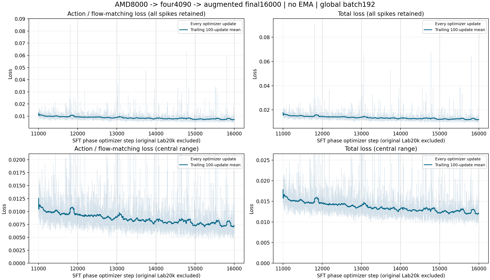

Curated demonstrations
2,500 Clean trajectories, filtered to 549,737 valid window starts.
50 tasks × 50 trajectoriesLingBot-VLA 2.0 × RoboTwin 2.0
A 6B vision-language-action policy adapted with multi-stage full-parameter training, protected visual augmentation, and closed-loop evaluation across 50 manipulation tasks.
HumaLog Team · 2026
01 / Motivation
We start from only 2,500 official Clean demonstrations and preserve the original relative-joint action definition. The training curriculum adapts appearance and geometry while protecting the robot, manipulated objects, and task targets.
The final model predicts a 50-step action chunk and executes the first 25 steps before observing again, keeping the policy responsive during long-horizon tasks.
02 / Method
Every stage binds data, normalization, model state, and evaluation protocol.
2,500 Clean trajectories, filtered to 549,737 valid window starts.
50 tasks × 50 trajectoriesColor, compression, blur, geometry, and background erasing with foreground guards.
Training only · no detector at inferenceDense student optimization with inherited Adam state and grouped learning rates.
36,000 optimizer updatesThree RGB views, H50 prediction, execute 25 actions, then observe again.
Clean + Randomizedaarm,h = qtarget,h − qnow
12 arm dimensions use per-horizon MeanStd normalization. Two gripper dimensions retain absolute MinMax targets.
03 / Training
Final 5,000 updates are complete, continuous, and preserved with all spikes.

Lab adaptation
Full SFT
CUDA continuation
Augmented SFT
Loss is a fitting metric. Closed-loop success is reported separately below.
04 / Evaluation
50 tasks · Clean and Random settings · 30 scored episodes per task-setting pair.

Loading verified task results…
05 / Real-world demo
A full-parameter LingBot-VLA adaptation for two SO101 follower arms.
06 / Resources
Code, model, protocol, and evidence remain version-bound.